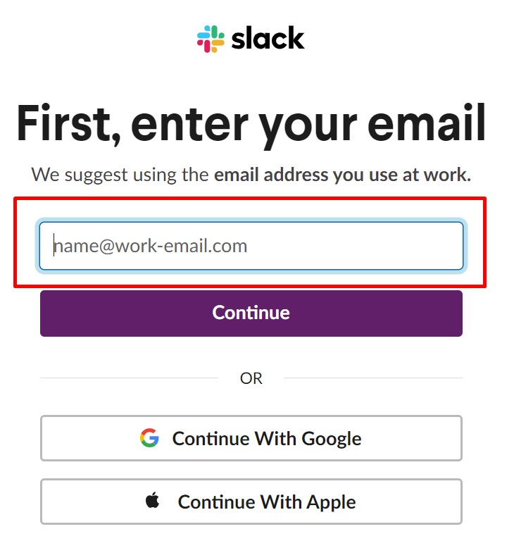
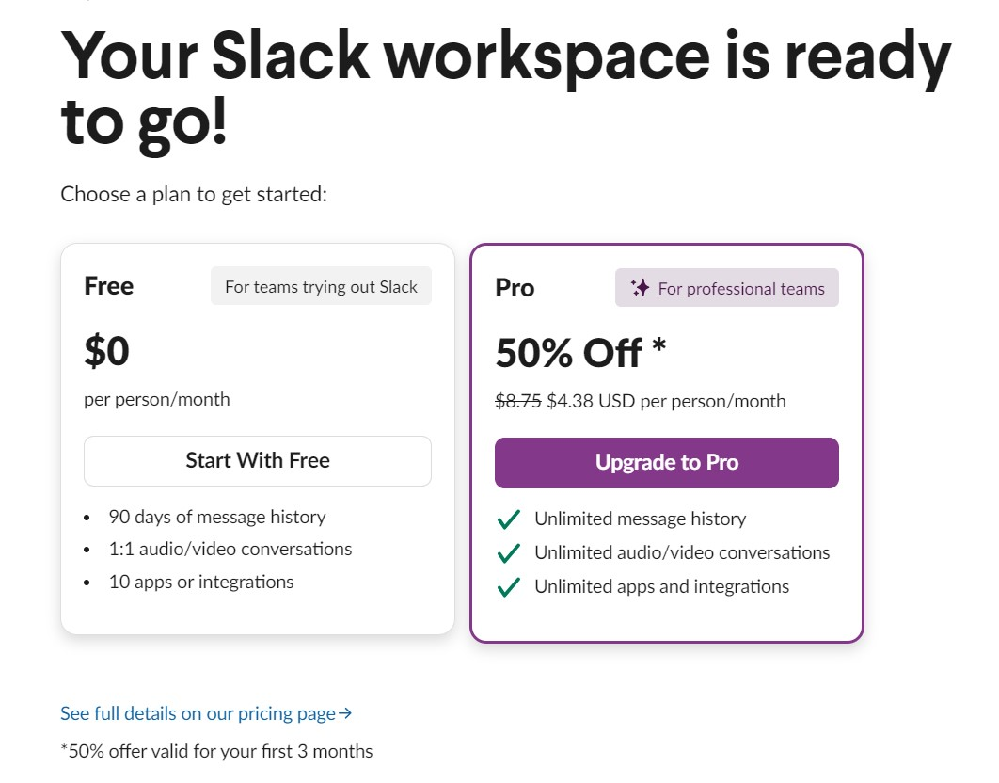
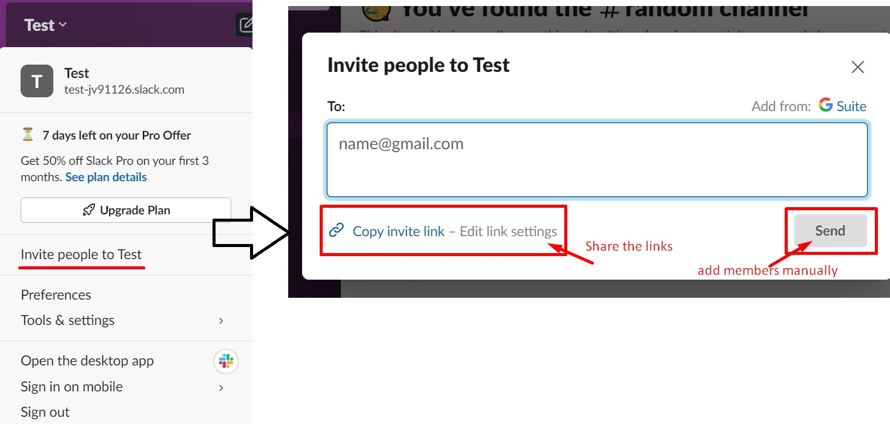
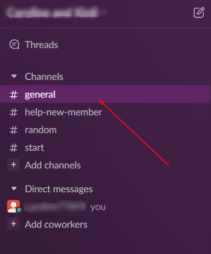
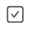
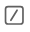
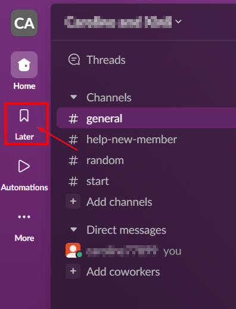
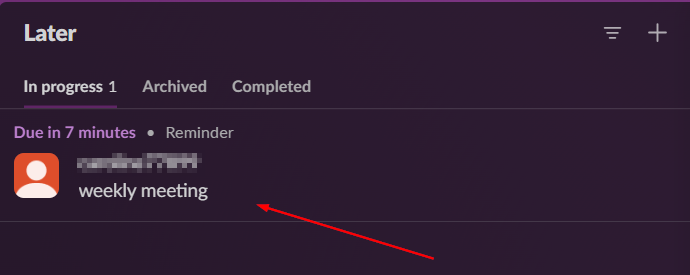
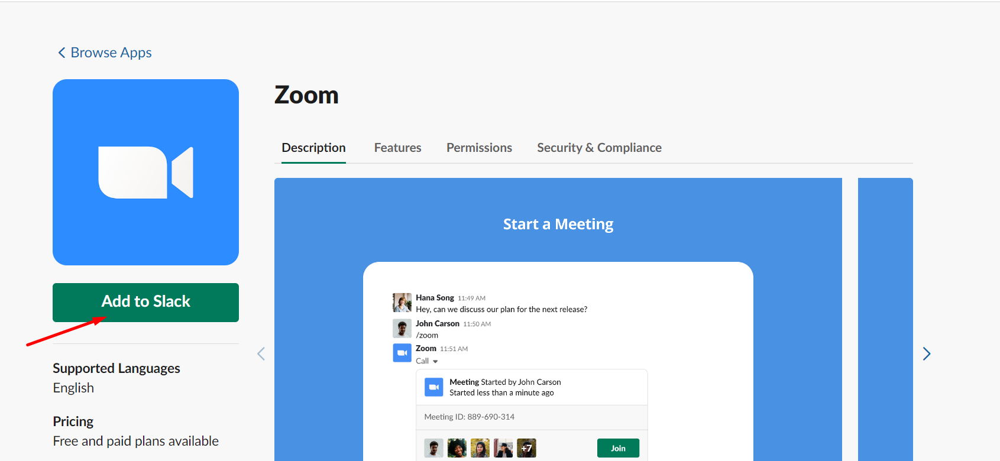

Slack User Documentation
Welcome!👋 Let's start to create a new workspace for you and your team with awesome features. This documentation will guild you through setting up a new workplace in Slack, planning projects using Canvas and integrate Zoom into your workplace. These steps keeps you stay updated and better communicate with your teammates.
Intended Users
This documentation is targeted towards the following users:
- New users who have little knowledge of Slack
- New users who have adquate knowledge of Internet
- New users who are responsible for managing workspace setups
- Users who are looking for Zoom integration into existing workplace
Prerequisite Knowledge
The documentation assumes the following:
- User has an email account
Workspace Setup and Integration
Create Slack Workspace
In this section, we will guide you through creating a new workspace and inviting team members to join.
Note
In order to successfully build your workspace, you are required to sign up by using your email address.
-
Visit Slack Website.
-
Click CREATE A NEW WORKPLACE.
-
Enter your email, then click Continue.
 -
Check your email and get the confirmation code sent by Slack, then enter the code to the text field.

-
Click Create a Workspace.
-
Following prompt instructions and enter required information.
-
Enter coworkers’ emails or Skip this step (You can invite members later as well.)

-
Enter a channel name for initiating your first channel, then click Next.

-
Choose your plan.
 -
If you skipped inviting memebers in the Step7, on the left, click YOUR WORKSPACE NAME, then find
Invite people to YOUR WORKSPACE NAMEand click.
In the prompt text box, enter coworkers’ emails. Then click on Send to invite them if you manually enter emails. Or, you can choose to share the workspace link to invite members.

Conclusion
Good job, now, you successfully creating a new workspace and are able to :
- Invite members into workspace
- Start chats in channels
Project Planning with Canvas and Remind
In this session, you will learn how to use Canvas basic tools to organize your ideas, notes, and tasks within your preferred channel, as well as setting up reminders to manage important deadlines and commitments effectively within the channel environment.
-
Select a channel on the sidebar menu.
 -
Create and edit Canvas.
- Click Add-notes icon on top-right corner to open Canvas and add your notes.

- Type in ideas and descriptions.
- At the bottom menu, click on paper clip icon
 to add files.
to add files. - Click on table icon to add tables.
- Click on checkbox  to add checklists.
- Click Add-notes icon on top-right corner to open Canvas and add your notes.
-
Click close button icon to return back to channel.
-
In the message field, click on slash icon  at the bottom to open the shortcuts menu, then select "remind" topic. (Or type in "/remind" directly in the message field)
-
Click on Send icon
 to create a new reminder.
to create a new reminder. -
In the new popup window, fill out date, time and description. Then click Save to save the reminder.
-
Click on Later icon on left of the sidebar menu.
 -
Check if there is a new created reminder in the list. The following picture showcase the successfully setup reminder.
 -
Hover over the reminder, then click on the complete icon once you have done the task.

-
Click on More icon to edit or remove if necessary.

Conclusion
Now, you successfully creating a Canvas for a channel and a reminder. And you are able to :
- Showcase the project plan with your teammates
- Stay organized and on track by receiving timely reminders for important tasks
Integrating ZOOM into Workspace
By implementing the following steps, you can integrate Zoom with Slack, which allows you to initiate meetings directly from the platform with a simple step.
-
Check your email and get the confirmation code sent by
Slack, then enter the code to the text field. -
On the left side, click
...to open a floating widow and click Automations. Then, select Zoom and click Add.
-
In the new page, click Add to Slack.
 -
In the new page, select the way how you would like to use Zoom.
Then click Add Now.

-
Scoll down to the bottom and click Allow.

-
Installation is all done.
-
Back to your workspace.
-
On the left side, click Apps. You will see all apps installed.
-
Click on Zoom.
-
In the message field, click on slash icon at the bottom to open the shortcuts menu, then select "zoom" topic. (Or type in "/zoom" directly in the message field)
-
Click on Send icon
to start a meeting.
Conclusion
Congratulation! By the end of this section, you are able to communicate with your team members via Zoom. Now, start your stunning journey with Slack.
Note
If you are using the zoom in Slack in the first time, you are asked for authorizing zoom.
Troubleshooting
| Symptoms | Probable Cause | Action |
|---|---|---|
| Unable to open the redirect page | Your extensions might be blocking it. | Please disable any ad extensions on the page on the page. |
| Brower errors(No internet) | Not connected to WiFi or network. | Please ensure that your device is successfully connected to a working network. |
| Local connection is down. | Please try to use another network. | |
Glossary
| Term | Definition |
|---|---|
| Workplace | Slack workspace is where people can communicate and work together, connect all their software tools and services, and find the information they need to do their best work. |
| Canvas | A canvas is a surface built into Slack where you can create and share content with all coworkers in a channel. |
| Zoom | Zoom is a communications platform that allows users to connect with video, audio, phone, and chat. |
| Channel | Channels are spaces for all the people, tools, and files you need to get work done in Slack. You can create channels for different teams, topics, and projects to bring order and clarity to work. |
| Later | Messages and files you’ve saved and reminders you’ve set are only visible to you from the Later view. |